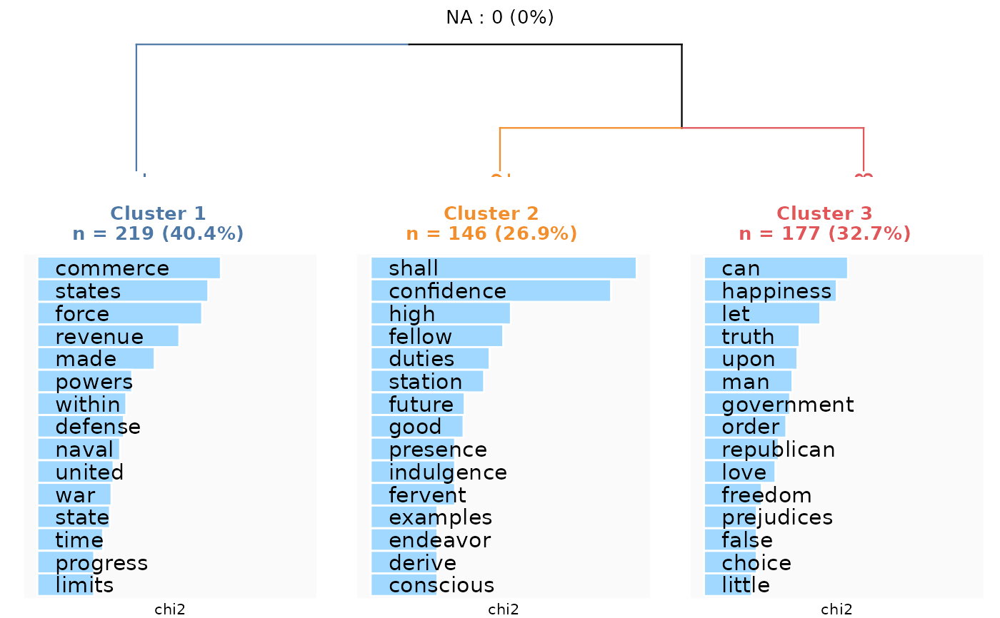
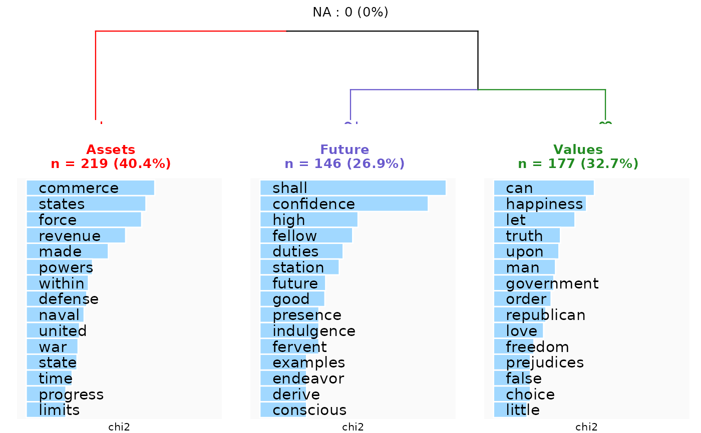

Generate a clustering description plot from a rainette result
Arguments
- res
result object of a
rainetteclustering- dtm
the dfm object used to compute the clustering
- k
number of groups. If NULL, use the biggest number possible
- type
type of term plots : barplot or wordcloud
- n_terms
number of terms to display in keyness plots
- free_scales
if TRUE, all the keyness plots will have the same scale
- measure
statistics to compute
- show_negative
if TRUE, show negative keyness features
- text_size
font size for barplots, max word size for wordclouds
- show_na_title
if TRUE, show number of NA as plot title
- cluster_label
define a specific term for clusters identification in keyness plots. Default is "Cluster" or "Cl." depending on the number of groups. If a vector of length > 1, define the cluster labels manually.
- keyness_plot_xlab
define a specific x label for keyness plots.
- colors
vector of custom colors for cluster titles and branches (in the order of the clusters)
Examples
# \donttest{
require(quanteda)
corpus <- data_corpus_inaugural
corpus <- head(corpus, n = 10)
corpus <- split_segments(corpus)
#> Splitting...
#> Done.
tok <- tokens(corpus, remove_punct = TRUE)
tok <- tokens_remove(tok, stopwords("en"))
dtm <- dfm(tok, tolower = TRUE)
dtm <- dfm_trim(dtm, min_docfreq = 3)
res <- rainette(dtm, k = 3, min_segment_size = 15)
#> Merging segments to comply with min_segment_size...
#> Clustering...
#> Done.
rainette_plot(res, dtm)
#> Warning: Using `size` aesthetic for lines was deprecated in ggplot2 3.4.0.
#> ℹ Please use `linewidth` instead.
#> ℹ The deprecated feature was likely used in the dendextend package.
#> Please report the issue at <https://github.com/talgalili/dendextend/issues>.

rainette_plot(
res,
dtm,
cluster_label = c("Assets", "Future", "Values"),
colors = c("red", "slateblue", "forestgreen")
)

# }